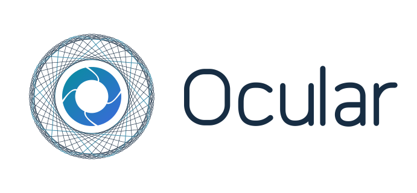

CAPTURE · READ · UNDERSTAND
Which operating system
are you using?
Choose your computer to see the right installation steps.
Please choose an option. Nothing downloads automatically.
“Manifest file is missing or unreadable”?
Open the extracted download folder and select the Ocular folder inside it. For example:
The folder you select must contain manifest.json. If it does not, go one folder deeper. Extract the ZIP fully before loading it. For a lasting installation, move the inner Ocular folder into My files first.
Installation details could not be loaded. Please reload this page.
Ocular’s keyboard shortcuts
- Ctrl + Alt + Shift + O
- Capture values and calculate their sum.
- Ctrl + Alt + Shift + X
- Capture text to edit and copy.
- Ctrl + Alt + Shift + A
- Toggle annotations.
These are the Windows shortcuts. The Chrome extension uses Alt+Shift+O for values, Alt+X for text and Alt+A for browser annotations. Chrome manages custom bindings. Shortcuts apply inside Chrome; capture is limited to its visible tab.